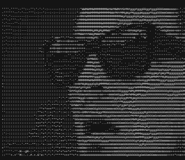

Hello World!!

Bienvenidos a mi portafolio. Mi nombre es Tiago Martínez y soy desarrollador Backend especializado en C#. Me apasiona la programación y estoy enfocado principalmente en el desarrollo web.
Mi objetivo es desarrollarme profesionalmente trabajando con tecnologías modernas, creando soluciones eficientes, escalables y de alto impacto, dejando atrás enfoques obsoletos y prácticas poco productivas. ¡¡Aprenda más de mí!!